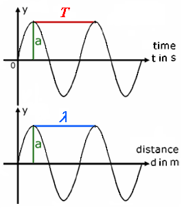
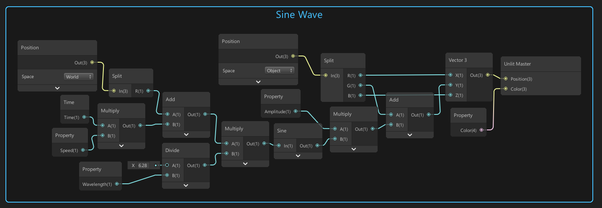

Water 2: Waves
Back to projects The final effect.
The final effect.
Setup
Before we add waves to our shader, we need to have a tessellated plane. We would use the basic Unity plane, but it does not have enough vertices to get the smooth wave movement we want. If you want to know how to create a tessellated plane, be sure to check out the previous tutorial.What Are Waves?
Want to skip theory?
When thinking about (mechanical) waves in the context of water, we could see them as the propagation
of energy through a medium (the water). When the energy reaches a certain water particle, that particle gets excited and moves upwards. When we send this energy through the medium in an oscillating way, the movement of the particles will be oscillating as well. Mechanical waves transport energy.
 Wave Propagation
The profile of the wave will depend on the variation of the energy source. When we look at water waves in particular, wind is usually the energy source that causes wave propagation. The image below shows the absolute movement of a single particle in a body of water. As you can see it not only moves up an down but it follows an almost circular path and has displacement on 2 axes.
Wave Propagation
The profile of the wave will depend on the variation of the energy source. When we look at water waves in particular, wind is usually the energy source that causes wave propagation. The image below shows the absolute movement of a single particle in a body of water. As you can see it not only moves up an down but it follows an almost circular path and has displacement on 2 axes.
 Water Wave
Water Wave
Simple Waves
When simulating waves in a shader, we will be changing the position (x,y,z) of every single vertex point of our water plane over time (t). We will start by creating a simple sine wave. A sine wave has several properties, we can present a sine wave as follows. y(t) = asin(wt + c) + d OR y(x) = asin(wx + c) + d where a = amplitude w = angular frequency c = phase offset (θ, theta) d = vertical offset (y0) the following relationships also exist w = 2πf where f = frequency f = 1/T (T = period, for y(t)) f = 1/λ (λ = wavelength, lambda, for y(x)) In the image below you can see that it is important to differentiate between a sine wave y(t) and y(x). In the case of y(t), we talk about the time between 2 high points and call that the period T. In the case of y(x) we talk about the distance between 2 high points and call that the wavelength λ.  Now let's move our water plane using a sine wave in shader graph. Our node setup looks like this.  Basically we just convert the following formula into nodes. y(x,t) = asin[(2π/λ)(vt+x)]+y0 The y position of each vertex depends on the x position of the vertex and the time. We introduce a speed variable v that will control how fast time progresses. We get the following result.
This looks alright but this is not how water waves look in the real world, we can do better!
More Complex Waves
Gerstner Waves
Sources
https://en.wikipedia.org/wiki/Mechanical_wave https://en.wikipedia.org/wiki/Wind_wave https://catlikecoding.com/unity/tutorials/flow/waves/@alexanderameye alexanderameye@gmail.com